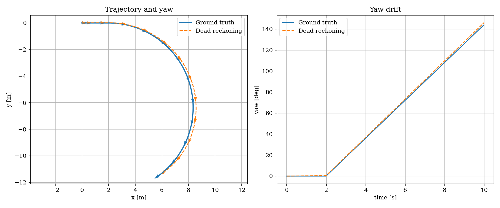

Dead reckoning
Estimating your current position from a previously known position, using how you have moved since then.
Dead reckoning with an IMU means estimating where you are now by starting from a known state and continuously integrating the IMU measurements.
IMU
- Gyroscope → angular velocity [rad/s]
- Accelerometer → specific force [m/s²]
- Sometimes a magnetometer → magnetic heading
The important complication is that the accelerometer measurements are in the IMU/body coordinate frame, while navigation usually needs acceleration in a fixed world/navigation frame.
Orientation estimate
Using gyro to update orientation
\(\theta_{k+1} = \theta_k + \omega_k\Delta t\)
Quaternion
Transform acceleration
- Rotate acceleration from body frame to world frame
- Remove gravity
- Integrated acceleration to velocity
- Integrated velocity to position
- \(a_{world} = R_{body\rightarrow world}a_{imu}\)
Acceleration to velocity
\(v_{k+1}=v_k+a_k\Delta t\)
Velocity to position
\(p_{k+1}=p_k+v_k\Delta t+\frac12a_k\Delta t^2\)
\(\boxed{\text{IMU} \rightarrow \text{orientation} \rightarrow \text{linear acceleration} \rightarrow \text{velocity} \rightarrow \text{position}}\)
Drift noise and integrator
The most influence imu error on dead reckoning
| Priority | Error | Sensor | What happens | Main compensation |
|---|---|---|---|---|
| 🔴 1 | Bias | Accel + Gyro | Constant/slow offset gets integrated | Calibration + EKF bias estimation |
| 🔴 2 | White noise | Accel + Gyro | Random measurement variation accumulates | Filtering + sensor fusion |
| 🔴 3 | Bias drift / random walk | Accel + Gyro | Bias slowly changes over time | EKF + external measurements |
| 🟠 4 | Temperature drift | Accel + Gyro | Bias changes as IMU temperature changes | Temperature calibration/compensation |
Accelerometer bias
The sensor might report:
For example, when true acceleration is zero:
but the IMU reports:
Dead reckoning integrates it twice:
Position error grows roughly with:
So this is very important.
Gyro bias
The gyro might say:
even though the robot is not rotating.
Because you integrate the gyro:
your quaternion slowly rotates even while the robot is stationary.
This produces an even more dangerous chain:
For a first simulator, simplify the entire IMU error model to:
For the accelerometer:
and the gyro:
Once you understand what those four terms—truth, bias, white noise, and integration—do to dead reckoning, add slowly changing bias. That is enough to understand most of the fundamental IMU navigation problem.
Can bias be calibrated?
Bias can be calibrated, but it can also change while the IMU is operating.
- Constant bias: Keep the IMU stationary, measure its average output, and subtract that offset.
- Temperature-dependent bias: Calibrate at several temperatures or use the IMU temperature measurement for compensation.
- Bias drift: Time, temperature, vibration, and sensor aging can slowly change the bias, so initial calibration cannot remove it completely.
- In-run estimation: An EKF can continuously estimate bias using references such as GNSS, wheel odometry, cameras, or known stationary periods.
A simple changing-bias model is:
where \(w_b\) is a small random change. The measurement model becomes:
In practice, calibrate the initial bias and then estimate how it changes during operation. Without an external reference or a known stationary period, bias and real motion can be difficult or impossible to distinguish.
Demo
install c4dynamics
This demo uses C4Dynamics to model the robot as a rigid body and simulate noisy, biased IMU measurements. The dead-reckoning calculations remain explicit so the resulting position and heading drift can be compared with the simulated ground truth.
Scenario
The robot accelerates from rest for two seconds. It then travels at a constant speed while turning left at \(18^\circ/s\). The simulated IMU adds white noise and constant accelerometer and gyroscope biases to the true motion.
The dead-reckoning estimate knows only its initial state. It integrates the noisy gyroscope measurement to estimate yaw, rotates the measured acceleration into the world frame, and integrates acceleration twice to estimate position.
hello_dead.py
Result
The estimates begin close to the ground truth, then separate as noise and bias are integrated. The heading arrows show how gyro bias changes the estimated orientation; that orientation error also rotates acceleration into the wrong world direction and increases the position error.
